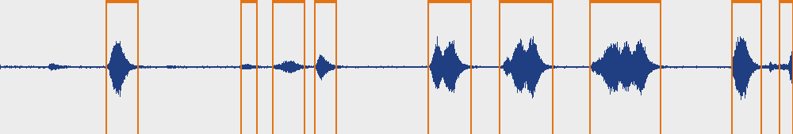
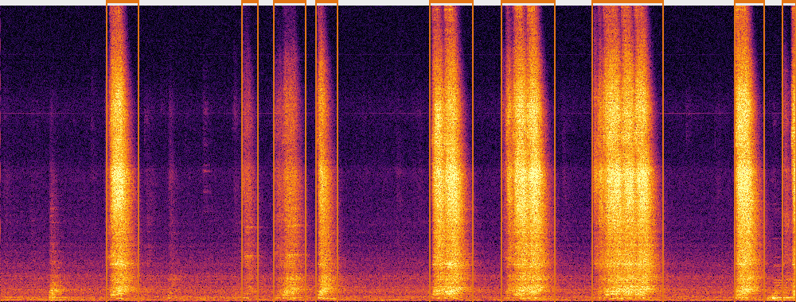
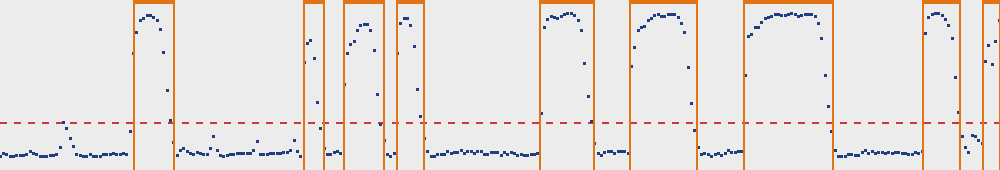

A01_01_20261030_120227 ·
真实时长 30.003s · 采样率 44100 Hz · 分析频段 0–16000 Hz


| # | 起止 (s) | 时长 (s) | 峰值分数 | 分数类型 | 与人工标注 | L1 人工 | L2 人工 | 试听（含上下文） |
|---|---|---|---|---|---|---|---|---|
| 1 | 4.00 – 5.20 | 1.20 | 36.296 | baseline_z | 未匹配 | 待审核 | not_trained | |
| 2 | 9.10 – 9.70 | 0.60 | 29.679 | baseline_z | 未匹配 | 待审核 | not_trained | |
| 3 | 10.30 – 11.50 | 1.20 | 33.843 | baseline_z | 未匹配 | 待审核 | not_trained | |
| 4 | 11.90 – 12.70 | 0.80 | 35.481 | baseline_z | 未匹配 | 待审核 | not_trained | |
| 5 | 16.20 – 17.80 | 1.60 | 36.803 | baseline_z | 未匹配 | 待审核 | not_trained | |
| 6 | 18.90 – 20.90 | 2.00 | 36.592 | baseline_z | 未匹配 | 待审核 | not_trained | |
| 7 | 22.30 – 25.00 | 2.70 | 36.659 | baseline_z | 未匹配 | 待审核 | not_trained | |
| 8 | 27.70 – 28.80 | 1.10 | 36.915 | baseline_z | 未匹配 | 待审核 | not_trained | |
| 9 | 29.50 – 30.00 | 0.50 | 35.045 | baseline_z | 未匹配 | 待审核 | not_trained |
分数是检测分数，不是故障概率；baseline_z 未做概率校准。
事件特征同时写入 events.csv / events.json，供 L2 使用。
审核模板：review.csv（填写后用 review-import 导入；L2 字段与 L1 字段独立）
| 标签 | 起止 (s) | 时长 (s) | 状态 |
|---|---|---|---|
| uncertain | 0.00 – 30.00 | 30.00 | 未审核 |
未审核区域不参与训练、阈值校准和评估；文件级粗标不会展开成逐帧真值。
模型 l1_demo · 检测器 baseline ·
分数类型 baseline_z · 阈值 8.0000（来源 model）
特征：sr=44100 · n_fft=2048 · hop=441 · n_mels=128 · fmin=20.0 · fmax=16000.0 · target_step=0.1s · context=±1.0s · normalize=none
后处理：min_duration=0.2s · merge_gap=0.3s · low_ratio=0.6
校准：False；demo：True； 后端：baseline
本报告只说明“声音是否异常”，不判断机械故障类型；L2 未训练时统一为“待审核/未训练”。